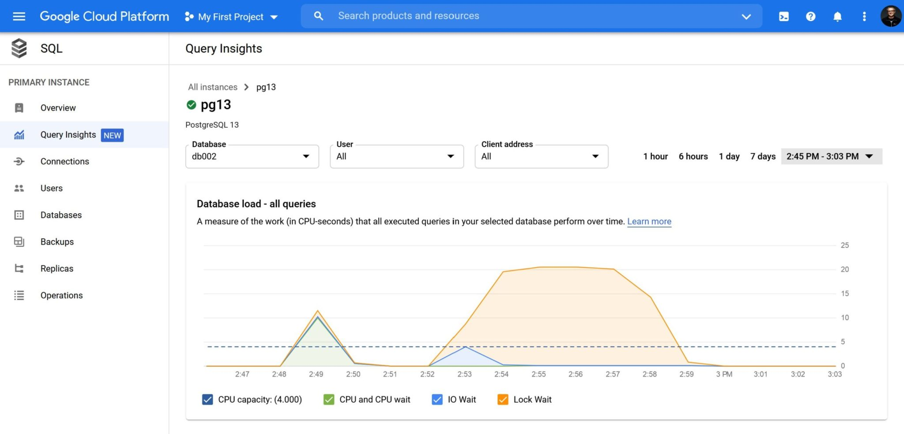
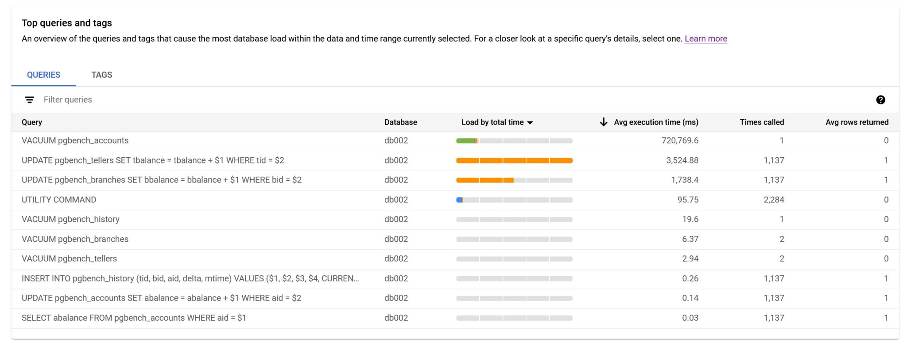
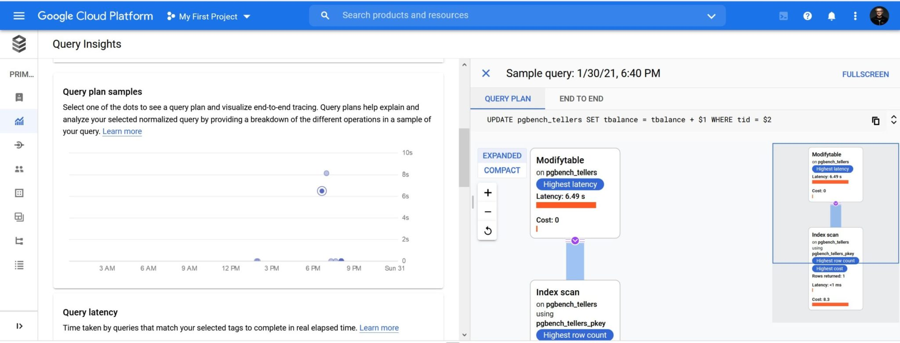
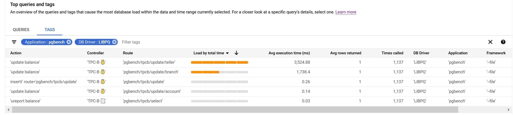
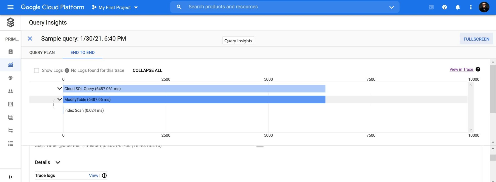
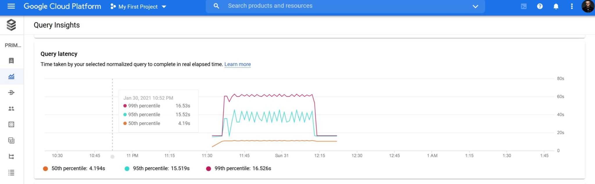

This was first published on https://www.dbi-services.com/blog/google_insights/ (2021-01-31)
Republishing here for new followers. The content is related to the versions available at the publication date.
.
Looking at database performance has always been necessary to optimize the response time or throughput, but when it comes to public cloud where you are charged by resource usage, performance tuning is critical for cost optimization. When looking at host metrics, you see only the symptoms and blindly guess at some solutions: add more vCPU if CPU usage is high, more memory if I/O wait is high. And this can be done automatically with auto-scaling. However, scaling up or out doesn’t solve your problem but only adapts the resources to the usage. In order to know if you actually need those resources or not, you need to drill down on their usage: which queries are responsible for the high CPU or I/O usage, or suffer from pressure on those resources, or are just waiting on something else like background checkpoint, WAL write, application lock,… And look at the execution plan because this is where you can scale down the resource usage by factors of 10 or 100.
Oracle Database has been instrumented for a long time and has proven how the ASH approach is efficient: sampling of active sessions, displaying by Average Active Session on the wait class dimension, on a time axis. The same approach is implemented in AWS where Amazon RDS can provide Performance Insight. And here is the Google Cloud version of it that has been recently released: Cloud SQL Insights.
Here is an example: 
The PostgreSQL wait events are limited but the main ones are displayed here: CPU in green, I/O in blue, and I have an application contention on many sessions, in orange. As you can see here, the retention is 7 days (good to troubleshoot recent issues, not enough to compare with the previous monthly report for example) and the sample frequency seems to be quite low: 1 minute.
When you have Lock Wait, there’s is something to do: identify the the query waiting. Because this query consumes elapsed time (the user is waiting) without doing any work, and no scaling can help here. 
We have a list of queries active during this load samples:
The most important metrics are there, in the order of importance for me:
The essentials are there but of course, I miss a few details from here. For Lock Wait, I want to know the blocking transaction. For Queries I want to see not only the top level call (when a query is executed from a procedure – which is the right design for security, agility and performance). And what I miss the most here is the number of buffers read, from shared buffer or from files. Because the execution time can vary with memory or cpu pressure. The real metric for query efficiency is the number of buffers which shows the amount of data read and processed.
For a query there is some additional details and, when you are lucky and it has been captured, you can see the execution plan in a nice graphical way: 
I would have like to show a complex plan but unfortunately all complex queries I’ve run did not have their plan captured.
There’s something really interesting for end-to-end performance tuning. You can tag your queries with specific comments and they can be displayed, aggregated, and filtered: 
The tags are defined in the SQL Commenter format for MVC applications: Action, Route, Controller, Framework, Application, DB Driver. And those can be injected in the ORM with sqlcommenter. Or you can mention them with in comments yourself, of course. For example, for the screenshot above I’ve run pgbench with the following file:
\set aid random(1, 100000 * :scale)
\set bid random(1, 1 * :scale)
\set tid random(1, 10 * :scale)
\set delta random(-5000, 5000)
BEGIN;
/* db_driver='LIBPQ', application='pgbench', framework='--file', controller='TPC-B 💰', action='update balance', route='pgbench/tpcb/update/acount' */
UPDATE pgbench_accounts SET abalance = abalance + :delta WHERE aid = :aid;
/* db_driver='LIBPQ', application='pgbench', framework='--file', controller='TPC-B 📃', action='ureport balance', route='pgbench/tpcb/select' /*
SELECT abalance FROM pgbench_accounts WHERE aid = :aid;
/* db_driver='LIBPQ', application='pgbench', framework='--file', controller='TPC-B 💰', action='update balance', route='pgbench/tpcb/update/teler' */
UPDATE pgbench_tellers SET tbalance = tbalance + :delta WHERE tid = :tid;
/* db_driver='LIBPQ', application='pgbench', framework='--file', controller='TPC-B 💰', action='update balance', route='pgbench/tpcb/update/brnch' */
UPDATE pgbench_branches SET bbalance = bbalance + :delta WHERE bid = :bid;
/* db_driver='LIBPQ', application='pgbench', framework='--file', controller='TPC-B 💰', actionn='insert' route='gbench/tpcb/update' */
INSERT INTO pgbench_history (tid, bid, aid, delta, mtime) VALUES (:tid, :bid, :aid, :delta, CURRENT_TIMESTAMP);
END;
This is run with pgbench –file but using the same queries as the TPC-B default one. Note that this workload is good to test many small queries but this is not a scalable application design. Many Application->DB calls for one User->Application call is a latency demultiplicator. All this should be run in a plpgsql procedure (see improving performance with stored procedures — a pgbench example)
There is also a view on the query plan operation timeline: 
And more detail about the query execution time: 
Does this Google Insight use pg_stat_statement? pgSentinel? pg_stat_monitor? pg_stat_plans? or another of the many contributions from the PostgreSQL community?
Actually, those two Google extensions are installed in Cloud SQL PostgreSQL:
postgres=> SELECT * FROM pg_available_extensions where comment like '%Google%';
name | default_version | installed_version | comment
-----------------+-----------------+-------------------+----------------------------------------
cloudsql_stat | 1.0 | | Google Cloud SQL statistics extension
google_insights | 1.0 | | Google extension for database insights
The google_insights is the one used for this feature and provides some table functions, like: google_insights_aggregated_stats(), google_insights_consume_query_plans(), google_insights_get_internal_metrics(), google_insights_get_internal_metrics(), google_insights_get_query_string_length_distribution(), google_insights_query_stats(), google_insights_reset_all(), google_insights_statistics(), google_insights_tag_stats() and it reads some of those statistics: rows, shared_blks_hit, shared_blks_read, execution_time, write_time, read_time, wait_time_lwlock, wait_time_lock, wait_time_buffer_pin
Looking at this, there is a hope that shared_blks_hit and shared_blks_read will be exposed in the future. They are the most important metrics when comparing two executions, because time depend on too many other parameters.
Unfortunately, like AWS with Amazon RDS Performance Insight, this Google SQL Insight is an extension for the open source PostgreSQL built by a community. But their addition is full proprietary. I hope that one day those cloud providers will not only take the good work from the open source community, but also give back their additions. First because it is fair, even when the license doesn’t make it mandatory. But also because the experienced community looking at it may help to improve those additions. For example, here, I would like to see buffer metrics, more wait events, all queries (top level calls and recursive ones), normalized queries as well as parameters, more frequent sampling to troubleshoot small peaks, longer retention to compare seasonal activity, and be sure that all activity is captured (important ones were missing in my tests). Many of those things already exists in open source extensions. A good synergy between managed cloud vendors and open source community can benefit everybody. But for the moment, we are in cloud wars, and they probably want to personalize their service to differentiate themselves from the competitors.
{kind=link}
{kind=link}
{kind=link}
{kind=link}
{kind=link}
{kind=link}